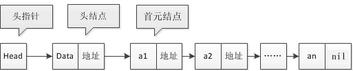
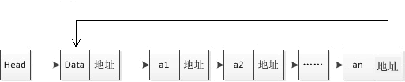

Go语言链表操作
链表是一种物理存储单元上非连续、非顺序的存储结构，数据元素的逻辑顺序是通过链表中的指针链接次序实现的。
链表由一系列结点（链表中每一个元素称为结点）组成，结点可以在运行时动态生成。每个结点包括两个部分：一个是存储数据元素的数据域，另一个是存储下一个结点地址的指针域。
使用链表结构可以避免在使用数组时需要预先知道数据大小的缺点，链表结构可以充分利用计算机内存空间，实现灵活的内存动态管理。但是链表失去了数组随机读取的优点，同时链表由于增加了结点的指针域，空间开销比较大。
链表允许插入和移除表上任意位置上的结点，但是不允许随机存取。链表有三种类型：单向链表、双向链表以及循环链表。
这里介绍三个概念：首元结点、头结点和头指针。
头结点在链表中不是必须的，但增加头结点有以下几点好处：
【示例 1】使用 Struct 定义一个单向链表。
【示例 2】为链表赋值，并遍历链表中的每个结点。
但是，有利就有弊。链表要想随机访问第 k 个元素，就没有数组那么高效了。因为链表中的数据并非连续存储的，所以无法像数组那样，根据首地址和下标，通过寻址公式就能直接计算出对应的内存地址，而是需要根据指针一个结点一个结点地依次遍历，直到找到相应的结点。
循环链表跟单链表唯一的区别就在尾结点。单向链表的尾结点指针指向空地址，表示这就是最后的结点了，而循环链表的尾结点指针是指向链表的头结点，它像一个环一样首尾相连，所以叫作“循环”链表，如下图所示。
和单链表相比，循环链表的优点是从链尾到链头比较方便。当要处理的数据具有环型结构特点时，就特别适合采用循环链表。比如著名的约瑟夫问题，尽管用单链表也可以实现，但是用循环链表实现的话，代码就会简洁很多。

图：双向链表
双向链表需要额外的两个空间来存储后继结点和前驱结点的地址。所以，如果存储同样多的数据，双向链表要比单链表占用更多的内存空间。虽然两个指针比较浪费存储空间，但可以支持双向遍历，这样也带来了双向链表操作的灵活性。
链表由一系列结点（链表中每一个元素称为结点）组成，结点可以在运行时动态生成。每个结点包括两个部分：一个是存储数据元素的数据域，另一个是存储下一个结点地址的指针域。
使用链表结构可以避免在使用数组时需要预先知道数据大小的缺点，链表结构可以充分利用计算机内存空间，实现灵活的内存动态管理。但是链表失去了数组随机读取的优点，同时链表由于增加了结点的指针域，空间开销比较大。
链表允许插入和移除表上任意位置上的结点，但是不允许随机存取。链表有三种类型：单向链表、双向链表以及循环链表。
单向链表
单向链表中每个结点包含两部分，分别是数据域和指针域，上一个结点的指针指向下一结点，依次相连，形成链表。这里介绍三个概念：首元结点、头结点和头指针。
- 首元结点：就是链表中存储第一个元素的结点，如下图中 a1 的位置。
- 头结点：它是在首元结点之前附设的一个结点，其指针域指向首元结点。头结点的数据域可以存储链表的长度或者其它的信息，也可以为空不存储任何信息。
- 头指针：它是指向链表中第一个结点的指针。若链表中有头结点，则头指针指向头结点；若链表中没有头结点，则头指针指向首元结点。

图：单向链表
图：单向链表
头结点在链表中不是必须的，但增加头结点有以下几点好处：
- 增加了头结点后，首元结点的地址保存在头结点的指针域中，对链表的第一个数据元素的操作与其他数据元素相同，无需进行特殊处理。
- 增加头结点后，无论链表是否为空，头指针都是指向头结点的非空指针，若链表为空的话，那么头结点的指针域为空。
使用 Struct 定义单链表
利用 Struct 可以包容多种数据类型的特性，使用它作为链表的结点是最合适不过了。一个结构体内可以包含若干成员，这些成员可以是基本类型、自定义类型、数组类型，也可以是指针类型。这里可以使用指针类型成员来存放下一个结点的地址。【示例 1】使用 Struct 定义一个单向链表。
type Node struct {
Data int
Next *node
}
其中成员 Data 用来存放结点中的有用数据，Next 是指针类型的成员，它指向 Node struct 类型数据，也就是下一个结点的数据类型。【示例 2】为链表赋值，并遍历链表中的每个结点。
package main
import "fmt"
type Node struct {
data int
next *Node
}
func Shownode(p *Node) { //遍历
for p != nil {
fmt.Println(*p)
p = p.next //移动指针
}
}
func main() {
var head = new(Node)
head.data = 1
var node1 = new(Node)
node1.data = 2
head.next = node1
var node2 = new(Node)
node2.data = 3
node1.next = node2
Shownode(head)
}
运行结果如下：
{1 0xc00004c1e0}
{2 0xc00004c1f0}
{3 <nil>}
插入结点
单链表的结点插入方法一般使用头插法或者尾插法。1) 头插法
每次插入在链表的头部插入结点，代码如下所示：
package main
import "fmt"
type Node struct {
data int
next *Node
}
func Shownode(p *Node){ //遍历
for p != nil{
fmt.Println(*p)
p=p.next //移动指针
}
}
func main() {
var head = new(Node)
head.data = 0
var tail *Node
tail = head //tail用于记录头结点的地址，刚开始tail的的指针指向头结点
for i :=1 ;i<10;i++{
var node = Node{data:i}
node.next = tail //将新插入的node的next指向头结点
tail = &node //重新赋值头结点
}
Shownode(tail) //遍历结果
}
运行结果如下:
{9 0xc000036270}
{8 0xc000036260}
{7 0xc000036250}
{6 0xc000036240}
{5 0xc000036230}
{4 0xc000036220}
{3 0xc000036210}
{2 0xc000036200}
{1 0xc0000361f0}
{0 <nil>}
2) 尾插法
每次插入结点在尾部，这也是我们较为习惯的方法。
package main
import "fmt"
type Node struct {
data int
next *Node
}
func Shownode(p *Node){ //遍历
for p != nil{
fmt.Println(*p)
p=p.next //移动指针
}
}
func main() {
var head = new(Node)
head.data = 0
var tail *Node
tail = head //tail用于记录最末尾的结点的地址，刚开始tail的的指针指向头结点
for i :=1 ;i<10;i++{
var node = Node{data:i}
(*tail).next = &node
tail = &node
}
Shownode(head) //遍历结果
}
运行结果如下：
{0 0xc0000361f0}
{1 0xc000036200}
{2 0xc000036210}
{3 0xc000036220}
{4 0xc000036230}
{5 0xc000036240}
{6 0xc000036250}
{7 0xc000036260}
{8 0xc000036270}
{9 <nil>}
但是，有利就有弊。链表要想随机访问第 k 个元素，就没有数组那么高效了。因为链表中的数据并非连续存储的，所以无法像数组那样，根据首地址和下标，通过寻址公式就能直接计算出对应的内存地址，而是需要根据指针一个结点一个结点地依次遍历，直到找到相应的结点。
循环链表
循环链表是一种特殊的单链表。循环链表跟单链表唯一的区别就在尾结点。单向链表的尾结点指针指向空地址，表示这就是最后的结点了，而循环链表的尾结点指针是指向链表的头结点，它像一个环一样首尾相连，所以叫作“循环”链表，如下图所示。

图：循环链表
图：循环链表
和单链表相比，循环链表的优点是从链尾到链头比较方便。当要处理的数据具有环型结构特点时，就特别适合采用循环链表。比如著名的约瑟夫问题，尽管用单链表也可以实现，但是用循环链表实现的话，代码就会简洁很多。
双向链表
单向链表只有一个方向，结点只有一个后继指针 next 指向后面的结点。而双向链表，顾名思义它支持两个方向，每个结点不止有一个后继指针 next 指向后面的结点，还有一个前驱指针 prev 指向前面的结点。图：双向链表
双向链表需要额外的两个空间来存储后继结点和前驱结点的地址。所以，如果存储同样多的数据，双向链表要比单链表占用更多的内存空间。虽然两个指针比较浪费存储空间，但可以支持双向遍历，这样也带来了双向链表操作的灵活性。
关注公众号「站长严长生」，在手机上阅读所有教程，随时随地都能学习。内含一款搜索神器，免费下载全网书籍和视频。

微信扫码关注公众号